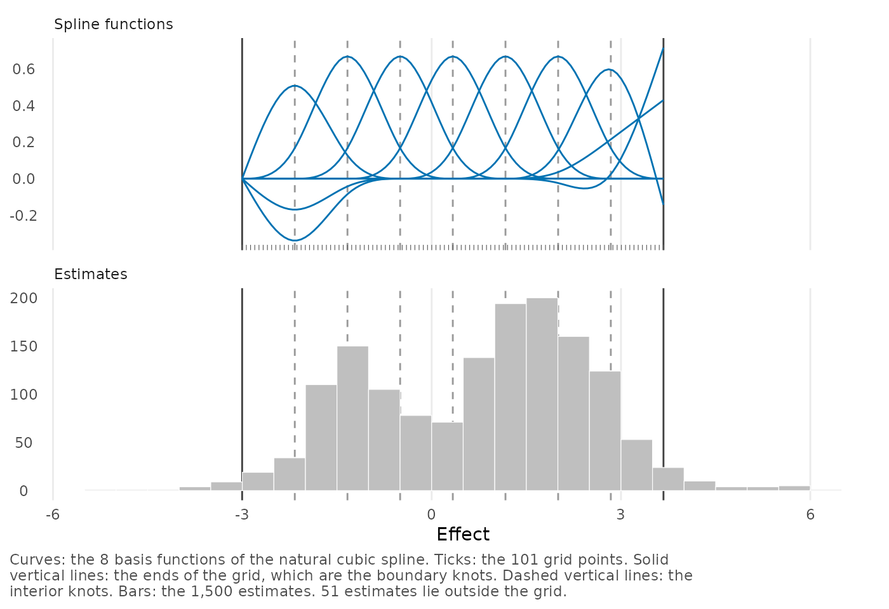
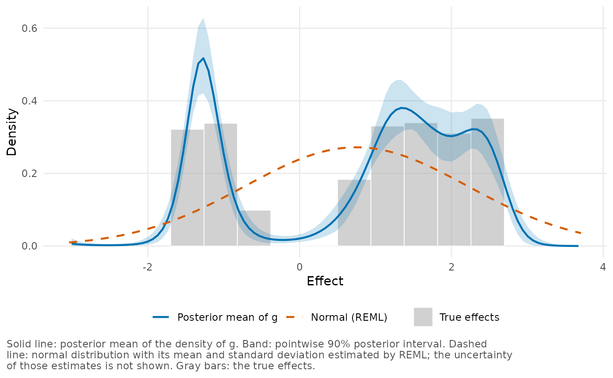
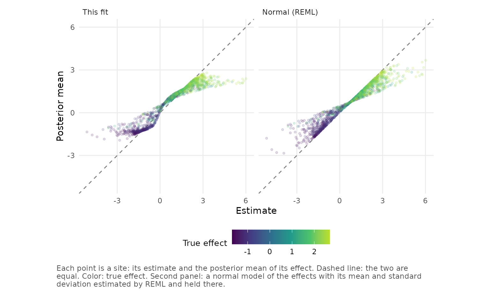
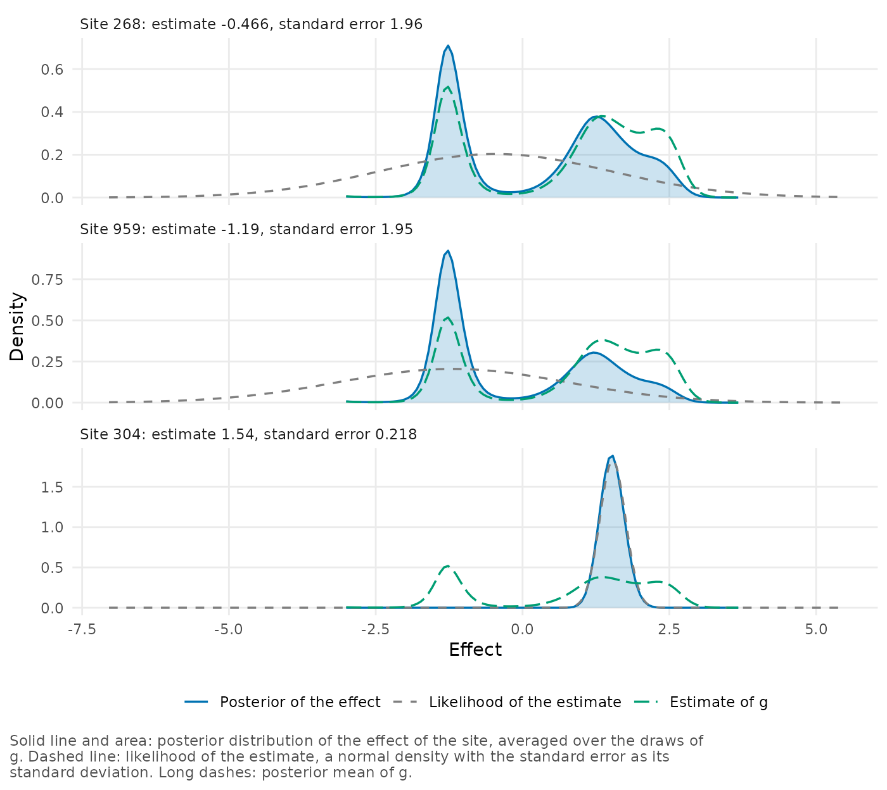
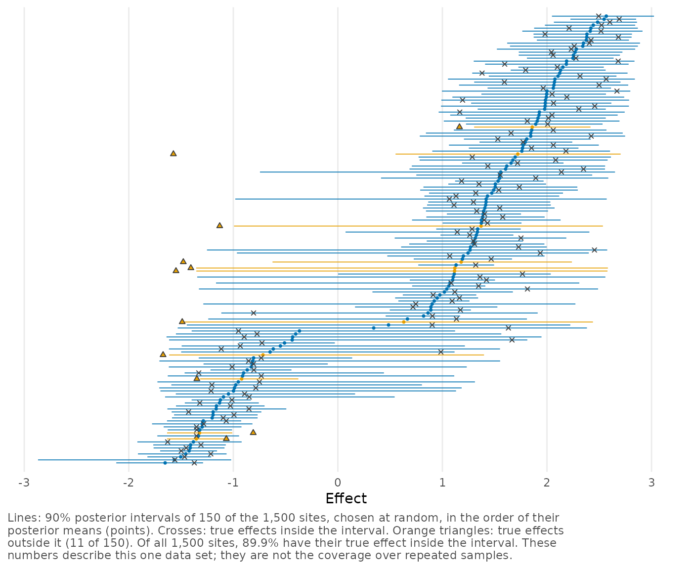
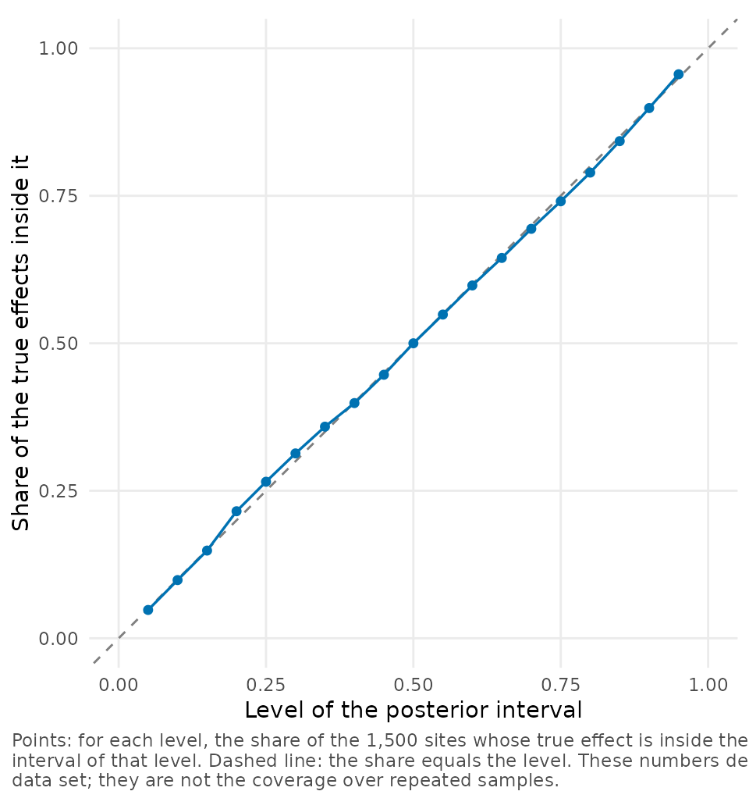

Twin Towers: recovering a distribution hidden by noise
Source:vignettes/twin-towers.Rmd
twin-towers.RmdIn this case study we fit simulated data as we would fit real data, and then compare the results with the truth. Real data do not allow that comparison, because the distribution of the true effects is never seen. Here the true effects of 1,500 sites lie in two separate groups, each estimate is a true effect plus normal error of a known size, and we give the model only what an analyst would have: the estimates and their standard errors. We check whether the fit recovers the two groups, how well it recovers the individual effects, and what the results depend on.
Two groups of effects and their noisy estimates
The true effects are the 1,500 values of disjointTheta,
the example that the deconvolveR package calls Twin Towers (Narasimhan and Efron
2020). The data frame twin_towers is one
simulated data set from the replication data of Lee and Sui (2025),
who call such a data set a panel. It is the panel in which the largest
standard error is 9 times the smallest (design parameters
I = 0.7 and R = 9), and the paper uses it in
its own sensitivity analysis of the prior. We use it unchanged. See
?twin_towers for the definitions of the design parameters
and for the source.
We call the data sim and look at the first rows.
sim <- twin_towers
head(sim)
#> site theta_true yi sei vi I R
#> 1 1 1.575405 1.8642862 1.7828639 3.17860355 0.7 9
#> 2 2 1.474004 1.4128779 1.1268516 1.26979464 0.7 9
#> 3 3 1.483298 1.1633946 0.2613307 0.06829374 0.7 9
#> 4 4 1.058912 1.7657197 1.4865568 2.20985114 0.7 9
#> 5 5 1.315141 0.8854123 0.3304032 0.10916626 0.7 9
#> 6 6 1.222705 0.9433596 0.2857737 0.08166658 0.7 9Each row is a site, and three columns matter here:
-
theta_trueis the true effect. There are 500 true effects between -1.7 and -0.7, and 1,000 between 0.7 and 2.7. No effect lies between the two groups. -
yiis the estimate: the true effect plus a normal error with standard deviationsei. -
seiis the standard error. The standard errors run from 0.22 to 1.96 and were assigned to the sites at random. For 15% of the sites the standard error is larger than 1.4, the distance between the groups.
Because of this noise the estimates do not show two groups. Their standard deviation is 1.74, compared with 1.45 for the true effects. The gap between the groups is filled in, and the tails reach -5.1 and 6.0. Histograms of the estimates and of the true effects appear in the plots below.
A grid from the estimates alone
The model needs a grid of values on which the distribution of
effects, \(g\), is defined. In a
simulation the range of the true effects is known, and it is tempting to
use it. You could not do that with real data, so we don’t do it here:
the call below does not use theta_true.
fit <- bayes_efron_fit(twin_towers, M = 8, seed = 20250627)We set M = 8 to get 8 spline functions instead of the
default of 6. In this data set the estimate of \(g\) is closer to the true effects with 8,
and the sampler runs more easily. We compare the two settings in the
last section. This is a choice for the example, so don’t take it as a
recommendation for large data sets: over 20 data sets of the same
design, the intervals contained somewhat fewer of the true effects with
8 functions than with 6, as we report below.
We ran this fit in advance and stored it in the package as
twin_towers_fit, thinned to 1 draw in 15, so the summaries
below are computed from 800 of its 12,000 draws.
fit <- twin_towers_fit
fit
#> <bayesEfron fit>
#> Model family: RE
#> Sites: 1500
#> Grid method: pilot
#> Runtime: 12.41 sec
#> Draws: 800 (4 chains, one iteration in 15 kept); site-level draws not kept
#> Diagnostics: Rhat 1.002; ESS bulk 1287; ESS tail 993.3; divergences 0; treedepth hits 0
#> Standard errors: 0.2182 to 1.964 (largest / smallest 9)
#> Grid: 101 points from -3.003 to 3.674; smallest standard error 3.268 grid spacings
#> Grid range: rule "pilot", narrowed to 30% of the range of "paper_realdata"; point masses; 8 spline functions
#> Next: summary() and site_summary() for the sites, g_summary() for the distribution of effects, plot().The Grid range line shows how the range of the grid was
chosen. In the output, “rule” means the method chosen with
grid_method. The default method, "pilot",
works in two steps. It starts from a wide range, named
"paper_realdata" in the output: the range of the estimates
widened by half its width on each side, here -10.7 to 11.6. That is far
beyond any effect, because the estimates are so much more spread out
than the effects. A short preliminary fit on that range, the pilot fit,
then shows where \(g\) lies, and the
range is narrowed to that region with a margin. For these data the
result is -3.00 to 3.67, or 30% of the wide range. To see the grid we
call plot() with type = "grid".
plot(fit, type = "grid")
The upper panel shows the 8 spline functions that are combined to give the logarithm of \(g\). The dashed lines mark the knots and the solid lines the limits of the grid. The lower panel shows the estimates. All 7 interior knots lie where there are estimates. The 51 estimates outside the grid are not a problem: the grid has to contain the effects, not the estimates, and an estimate far out in a tail is an effect inside the grid plus a large error.
Checking the sampler and the grid
Next we call diagnose(), which reports on the sampler
and on the grid.
diagnose(fit)
#> <bef_diagnostic>
#> Model family: RE
#> Rhat max: 1.002 (log_g[101])
#> ESS bulk min: 1287 (alpha[4])
#> ESS tail min: 993.3 (log_g[3])
#> Divergences: 0
#> Max treedepth hits: 0
#> E-BFMI min: 0.8582
#> Runtime: 12.41 sec
#> Grid:
#> lower end -3.003: at most 14.5% of a site's posterior in the outer 2% (site "774"); that end was set by the pilot fit on a wider range
#> upper end 3.674: at most 0.1% of a site's posterior in the outer 2% (site "1146")
#> sd of g: posterior 1.474 (1.435 to 1.508); prior 1.931 (1.613 to 2.101)
#> the central 99.9% of g spans 92% of the grid
#> Effective params: mean 918.5; sd 16.8The sampler passes every check. As
vignette("diagnostics") explains, a thinned fit still
reports the sampler diagnostics for the whole run, here 12,000
draws.
Among the Grid lines there is one thing to look at. Site
774 has 14.5% of its posterior probability in the outer 2% of the grid
at the lower end. Its estimate, -3.9 with a standard error of 0.8, lies
below that end, and the model cannot place the effect lower than the
grid reaches. diagnose() reports this as a note, because
the pilot fit placed that end where the distribution itself ends. See
vignette("choosing-a-grid") for what to do about a note and
about a warning.
The estimated distribution
We plot the estimate of \(g\) with
plot_g(). In a simulation we can pass the true effects as
truth, and normal = TRUE adds the normal
distribution of a random-effects model fitted to the same estimates.
plot_g(fit, truth = sim$theta_true, normal = TRUE)
The gray bars are the true effects, which were not used in the fit. The solid curve, the posterior mean of the density of \(g\), recovers the two groups: it has a peak over each group and little mass between them. It does not reproduce their flat tops and sharp edges, because a smooth curve built from 8 spline functions cannot. The dashed normal curve has a single peak.
To put numbers on the comparison we use g_summary():
first the probability that \(g\) puts
between the two groups, then its mean, variance and standard deviation,
which we compare with the mean and standard deviation of the true
effects.
g_summary(fit, type = "prob", lower = -0.7, upper = 0.7)
#> from to mean lower upper
#> 1 -0.7 0.7 0.05943765 0.04125071 0.08113435
g_summary(fit, type = "moments")
#> parameter mean lower upper
#> 1 mean_g 0.7371258 0.6632461 0.8090581
#> 2 var_g 2.1731465 2.0598402 2.2752720
#> 3 sd_g 1.4739846 1.4352143 1.5084005
c(mean = mean(sim$theta_true), sd = sd(sim$theta_true))
#> mean sd
#> 0.7385057 1.4535252The estimate of \(g\) puts a probability of 0.06 on the interval from -0.7 to 0.7, which contains no true effect, whereas the normal distribution puts 0.33 on that empty interval. The mean of \(g\) is estimated as 0.74 (0.66 to 0.81) and its standard deviation as 1.47 (1.44 to 1.51). The true effects have a mean of 0.74 and a standard deviation of 1.45.
Site effects between the two groups
In the plot from plot_shrinkage(), each estimate is on
the horizontal axis and its posterior mean on the vertical axis. We pass
truth to color the points by their true effects, and
normal = TRUE to add a panel for the normal model.
plot_shrinkage(fit, normal = TRUE, truth = sim$theta_true)
In the left panel the points gather along two levels, because an estimate is shrunk toward the group that it more probably belongs to. The normal model in the right panel shrinks every estimate toward a single mean, by a proportion that depends only on its standard error, and so it places sites of both groups in the empty middle.
A posterior mean from our fit can fall in that middle too. When a
site has an imprecise estimate between the groups, its posterior
distribution has two modes, and the mean lies between them. We look at
two imprecise sites with plot_site_posterior(), and at the
most precise site for contrast.
between_groups <- c(268, 959)
most_precise <- which.min(sim$sei)
plot_site_posterior(fit, sites = c(between_groups, most_precise))
For sites 268 and 959 the likelihood of the estimate, the dashed
curve, is so wide that it covers both groups, and the posterior
distribution retains a part of each. The most precise site has a narrow
likelihood, and its posterior distribution follows it. The summaries of
the three sites come from site_summary().
three <- site_summary(fit, sites = c(between_groups, most_precise))
three[, c("site", "estimate", "se", "mean", "mode", "lower", "upper")]
#> site estimate se mean mode lower upper
#> 1 268 -0.4663484 1.9639610 0.2869464 -1.267268 -1.544906 2.376698
#> 2 959 -1.1935388 1.9496198 -0.1003577 -1.267268 -1.601517 2.210082
#> 3 304 1.5351175 0.2182179 1.5261624 1.536964 1.183991 1.881736The posterior means of the first two sites, 0.29 and -0.10, are
values that the effect is unlikely to have. Their 90% intervals, more
than 3.5 wide, are a better summary, and the plot is better still.
Because of sites like these, site_summary() reports the
mode beside the mean.
Accuracy and coverage
Because the true effects are known, we can check the posterior
intervals against them. We plot the 90% intervals of 150 randomly chosen
sites with their true effects using plot_recovery(), which
marks the sites with a true effect outside the interval.
plot_recovery(fit, sim$theta_true, seed = 1)
For all 1,500 sites we compute the proportion of true effects inside the 90% intervals, and the root mean squared error (RMSE).
sites <- site_summary(fit)
mean(sim$theta_true >= sites$lower & sim$theta_true <= sites$upper)
#> [1] 0.8986667
rmse <- function(x) sqrt(mean((x - sim$theta_true)^2))
c(posterior_means = rmse(sites$mean), estimates = rmse(sim$yi))
#> posterior_means estimates
#> 0.6876027 0.9664180The proportion is 89.9%. The RMSE of the posterior means is 0.688, compared with 0.966 for the estimates themselves and 0.730 for the posterior means of the normal model.
The same function with type = "calibration" repeats the
first calculation for intervals of every level from 5% to 95%.
plot_recovery(fit, sim$theta_true, type = "calibration")
The proportions follow the diagonal.
But all of these proportions describe one data set. Coverage is the
mean of such a proportion over repeated data sets, and it takes many
data sets to estimate. Over 20 independent data sets of 1,500 sites from
the same design, the mean proportion for the 90% intervals, which
estimates their coverage, is 0.900 (standard error 0.003) with the
default of 6 spline functions and 0.893 (0.003) with 8. The second value
is more than two standard errors below 0.90. That benchmark is described
in vignette("implementation"), where the tables give this
mean proportion in a column named inclusion. For a
comparison of this fit with empirical Bayes fits of the same data, see
vignette("empirical-bayes").
Sensitivity to the grid
The stored fit is one of several that we could have made. A table
that comes with the package compares five fits of the same data, each
with all 12,000 draws: the call used in this vignette, the defaults, a
range placed around the true effects with 6 and with 8 spline functions,
and the wide range from the estimates alone
(grid_method = "paper_realdata").
ranges <- readRDS(system.file("examples", "twin_towers_comparison.rds",
package = "bayesEfron"))$table
shown <- data.frame(
fit = ranges$fit, lower = ranges$lower, upper = ranges$upper,
tree_depth = ranges$treedepth_share, w1 = ranges$w1, rmse = ranges$rmse,
inside_90 = ranges$coverage_90
)
shown[-1] <- round(shown[-1], 3)
shown
#> fit lower upper tree_depth
#> 1 example: rule "pilot", M = 8 -3.003 3.674 0.000
#> 2 defaults: rule "pilot", M = 6 -3.003 3.674 0.011
#> 3 range around the true effects, M = 6 -2.199 3.198 0.000
#> 4 range around the true effects, M = 8 -2.199 3.198 0.000
#> 5 range of version 0.3.0 ("paper_realdata"), M = 6 -10.681 11.574 0.444
#> w1 rmse inside_90
#> 1 0.062 0.688 0.899
#> 2 0.103 0.689 0.903
#> 3 0.084 0.689 0.906
#> 4 0.057 0.687 0.908
#> 5 0.145 0.692 0.899The table has these columns:
-
lowerandupperare the limits of the grid. -
tree_depthis the proportion of iterations in which the sampler reached its maximum tree depth, a sign that it worked hard for each draw. -
w1is the Wasserstein distance between the estimate of \(g\) and the true effects: the area between their two distribution functions, in the units of the effects, so smaller is closer. -
rmseandinside_90are the RMSE of the posterior means and the proportion of true effects inside the 90% intervals, as in the previous section.
For the estimate of \(g\), the
number of spline functions matters more than where the range comes from.
With 8 functions, w1 is 0.062 on the range of this vignette
and 0.057 on the range around the true effects, and with 6 functions it
is 0.103 and 0.084. So a range found from the estimates alone costs some
accuracy with either number of functions, but less than is gained by
going from 6 functions to 8.
On the wide range the sampler reaches the maximum tree depth in 44% of its iterations, and the estimate of \(g\) is the least accurate of the five. In this data set, narrowing the range is what makes the default workable.
The posterior means of the sites are almost unaffected by any of this. Their RMSE differs by less than 0.01 across the five fits. What the grid changes is the estimate of the distribution and the cost of the fit.